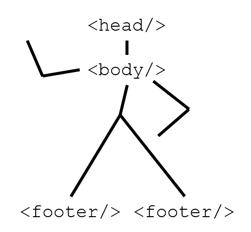

Criada pelo britânico Tim Berners-Lee, o acrônimo HTML significa HiperText Markup
Language, traduzindo ao português: Linguagem de Marcação de Hipertexto. O HTML é
o componente básico da web,ele permite inserir o conteúdo e estabelecer a
estrutura básica de um website.
Portanto, ele serve para dar significado e
organizar as informações de uma página na web. Sem isso, o navegador não saberia
exibir textos como elementos ou carregar imagens e outros conteúdos.
Os hipertextos são conjuntos de elementos conectados. Esses podem ser palavras,
imagens, vídeos, documento, etc. Quando conectados, formam uma rede de
informações que permite a comunicação de dados, organizando conhecimentos e
guardando informações.
Ao visitar uma página simples na web, você pode perceber
que existem diferentes distribuições e tamanhos para títulos, parágrafos,
imagens, vídeos e qualquer outro elemento. Essa estrutura é estabelecida através
do HTML. No inicio da web, era comum encontrar sites apenas contendo textos e
imagens simples, com estrutura básica e sem estilizações. Porém, nos dias atuais,
muito dificilmente você encontrará sites que possuam apenas elementos HTML.
Portanto, podemos considerar o HTML o “esqueleto” da sua página.
O que é a tag HEAD?
Em HTML, a tag
é usada como cabeçalho, ou seja, um conjunto de informações
de uma página de um site.
Se você lembrar bem, cabeçalho é um trecho de um documento que fica no início e
fornece informações. Por exemplo, no cabeçalho de uma prova da escola você
preenchia seu nome, número, nome do professor, nome da disciplina etc.
O que é a tag BODY?
A tag body está aninhada (dentro) da tag , e está no mesmo nível da tag
.
E assim como estas, possui tag de abertura e fechamento:
e
A tag faz parte da estrutura básica do documento, sua finalidade é definir o
corpo do documento, ou seja, tudo que estiver dentro da tag body será mostrado
de alguma forma no conteúdo da página.

Agentes conversacionais podem ser definidos como sistemas projetados para
receber um parâmetro do usuário e oferecer uma resposta apropriada, de
forma a simular uma conversa humana (TEDESCO; BARROS, 2016).
Para que serve um agente conversacional?
Um agente conversacional é um programa de computador que tenta simular um
ser humano na conversação com as pessoas. O objetivo é responder as perguntas de
tal forma que as pessoas tenham a impressão de estar conversando com outra
pessoa e não com um programa de computador.